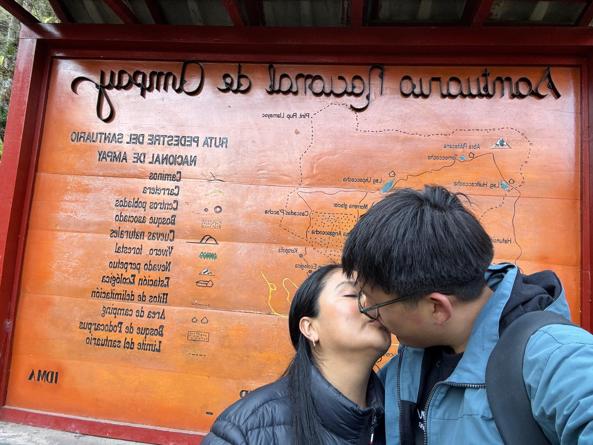

Para la Luz de Mi Vida
Como cada flor amarilla que florece anunciando la primavera, mi amor por ti renace con más fuerza cada día.
Tus flores amarillas nunca se marchitarán.
Dicen que regalar flores amarillas cada 21 de septiembre simboliza el deseo sincero de pasar la vida al lado de la persona amada, llenándola de sonrisas, paz y momentos felices.
Por eso hoy te regalo este árbol mi amorcito que no deja de florecer: una pequeña muestra de lo inmenso y duradero que es todo lo que despiertas en mi corazón.
"Gracias por hacer de mi vida algo hermoso."
21 de Septiembre • Por siempre juntos
Nuestra Galería de Momentos
Cada foto atesora un recuerdo tan brillante como un ramo dorado.
Donde todo comenzó
26 de abril de 2023, el día más lindo.

Tardes juntos
Cada minuto contigo vale oro.
Nuestras locuras
Tu risa siempre ilumina mi mundo.
Por siempre nosotros
Por una vida entera juntos.